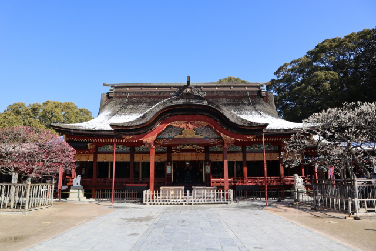
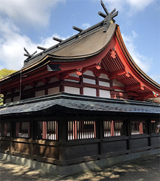
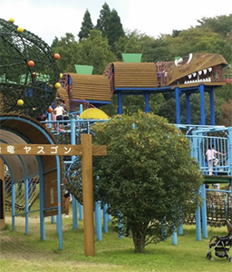
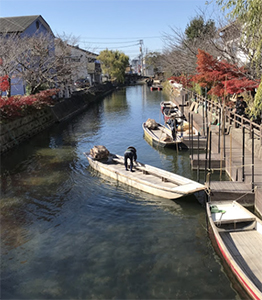

MENU
九州トップ
県から探す
福岡県
佐賀県
長崎県
熊本県
大分県
宮崎県
鹿児島県
沖縄県
島を旅する
壱岐
対馬
屋久島
奄美大島
目的から探す
温泉
グルメ
絶景
歴史・文化
体験
レジャー
世界遺産
ショッピングモール
道の駅
全国版トップへ戻る
観光マップ
九州
全国版トップ
九州
福岡
福岡県
Fukuoka
エリアから探す
福岡市

春日市
大野城市
太宰府市
那珂川市
宇美町
篠栗町
志免町
須恵町
久山町
粕屋町

宗像市
古賀市
福津市
新宮町
糸島市

朝倉市
朝倉郡
北九州市
中間市
遠賀郡
行橋市
豊前市
京都郡
築上郡
八女市
筑後市
八女郡
久留米市
大川市
小郡市
うきは市
三井郡
三潴郡

大牟田市
柳川市
みやま市
直方市
宮若市
鞍手郡
飯塚市
嘉麻市
嘉穂郡
田川市
田川郡
目的から探す
温泉
グルメ
絶景
歴史・文化
体験
レジャー
世界遺産
ショッピングモール
道の家